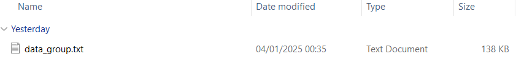
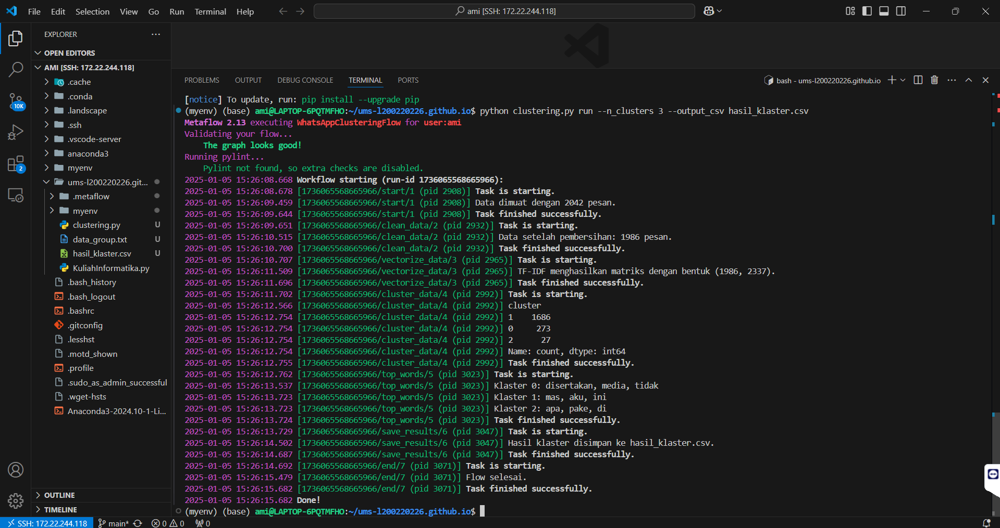

Data Mahasiswa
Aminah Estu Utami
L200220226
IPSD-D
Langkah-Langkah
- Export konten group WhatsApp menjadi file teks. 
-
Pindah file
data_group.txtke direktoriums-l200220226.github.iopada WSL. - Menyiapkan kode program. Lihat Kode Program
-
Menjalankan kode clustering di WSL dengan perintah:
python clustering.py run --n_clusters 3 --output_csv hasil_klaster.csv -
Hasil Analisis
-
Jumlah Pesan
- Total pesan yang dimuat dari file log WhatsApp: 2.042 pesan.
- Setelah proses pembersihan, jumlah pesan berkurang menjadi 1.986 pesan.
- Penurunan pesan: 56 pesan dihapus selama proses pembersihan.
-
TF-IDF Vectorization
- TF-IDF menghasilkan matriks dengan bentuk (1.986, 2.337).
- 1.986: Jumlah pesan setelah pembersihan.
- 2.337: Jumlah fitur (kata unik) yang dihasilkan setelah proses vektorisasi.
-
Klasterisasi
-
Algoritma KMeans berhasil mengelompokkan pesan ke dalam 3
klaster:
- Klaster 0: 1.686 pesan.
- Klaster 1: 273 pesan.
- Klaster 2: 27 pesan.
-
Analisis:
- Klaster 0 merupakan konten media yang tidak disertakan, mengapa begitu? karena saya tidak menyertakan media saat export data group.
- Klaster 2 dan 3 mencakup sebagian besar pesan dengan tema umum.
-
Algoritma KMeans berhasil mengelompokkan pesan ke dalam 3
klaster:
-
Kata Teratas per Klaster
- Klaster 0: disertakan, media, tidak (konten media).
- Klaster 1: mas, aku, ini (kata ganti).
- Klaster 2: apa, peke, di (kata fungsi).
-
Penyimpanan Hasil
-
Hasil klasterisasi disimpan ke file CSV:
hasil_klaster.csv.
-
Hasil klasterisasi disimpan ke file CSV:
-
Jumlah Pesan